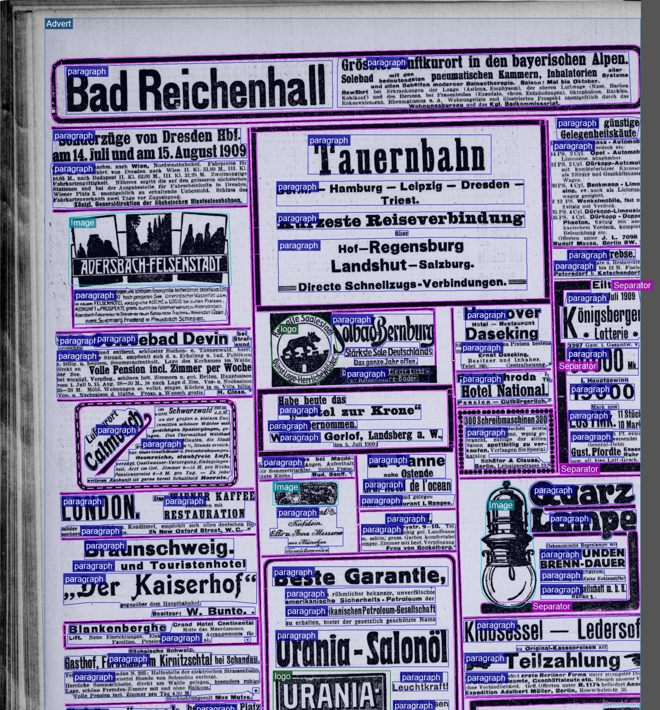

Werbung, Anzeigen, Reklame, Annonce, Inserate sind als AdvertRegion zu
kennzeichnen. Eine Auszeichnung von einzelnen Anzeigen bei Zeitungen ist abzusehen,
sondern der gesamte Bereich der Anzeigen ist mit der AdvertRegion zu markieren.
Innerhalb einer Anzeige können sich weitere Regionen befinden, die entsprechend ihrer
strukturellen Bedeutung ebenfalls zu markieren sind.
Abbildung 1. Buchanzeige

Abbildung 2. Anzeigeteil in einer Zeitung. Link: https://www.deutsche-digitale-bibliothek.de/newspaper/item/MZUUFGMCRVPAJE4WGHIU2HAPCSN36L6G?issuepage=4